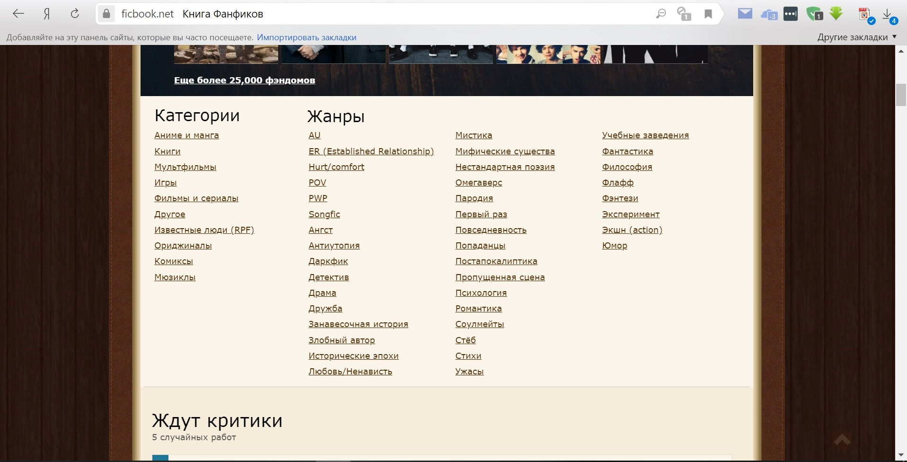

Место учёбы: НИУ ВШЭ, Факультет гуманитарных наук, Школа филологии
Научные интересы: европейская и американская литература 20 века, русская проза 19 века, художественный перевод
Немного о себе: люблю музыку, психологические триллеры, американское кино 90х и спать)
Достоинства:

Недостатки: